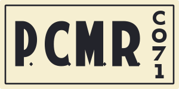

← PlateForge · Company 71P.C.M.R. · painted Company 71 plate
The reconstruction uses heavy filled lettering, triangular M notches, wedge-ended C, diamond punctuation and a separate compact CO71 column. These are the observed characters of one painted wooden plate; they do not establish a shared PCMR font.
Original photograph.jpg) Current PlateForge
Current PlateForge
Source article · Full original photograph